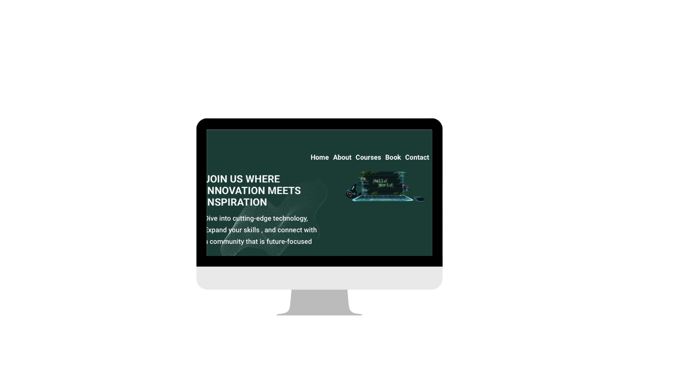

CODE HEAD'S HUB
gusgiuhcj bhjgaseuywgew ueg87wf34yewhdx hsaicjs bjsakhca jahskjnxkajzoiu

Project Overview
The Learning Hub project is designed to create a robust and interactive platform aimed at empowering individuals by providing them with the latest skills in software development and technology. The platform serves as a one-stop destination for learners of all levels—from beginners to advanced users—seeking knowledge in various technical fields, such as programming languages, web development, data science, machine learning, and more.
Key Features
- User-Friendly Interface: The platform features a clean, intuitive design for easy navigation, allowing users to seamlessly explore different courses, tutorials, and resources.
- Wide Range of Courses: A comprehensive catalog of courses covering various topics:
- Programming Languages: HTML ,CSS , JavaScript,
- Web Development: HTML, CSS, JavaScript, React, Node.js, and other modern frameworks.
- Data Science & AI: Machine Learning, Data Visualization, Data Analysis with Python, etc.
- Cybersecurity: Understanding the basics of online security, ethical hacking, and security protocols.
- Interactive Learning Tools:
- Quizzes & Assignments after each module to assess understanding.
- Interactive Code Editor for hands-on coding experience.
- Video Tutorials from industry experts to cover both fundamental and advanced concepts.
- Progress Tracking: Learners can track their progress with personalized dashboards and receive certificates upon course completion.
- Community Support: Discussion forums and peer reviews enable learners to interact, collaborate, and share knowledge.
- Responsive Design: The platform is optimized for use across desktop, tablet, and mobile devices.
- Admin Dashboard: An easy-to-use dashboard for managing courses, user progress, and generating reports.
Tech Stack
- Frontend: HTML, CSS, JavaScript, React.js (for dynamic UI and component-based structure)
- Backend: Node.js with Express (for handling API requests)
- Database: MongoDB (to store user data, courses, and progress)
- Authentication: JWT (JSON Web Tokens) for secure login and registration
- Deployment: Hosted on Netlify or AWS for scalability and high availability
Benefits to Users
- Access to High-Quality Content: A mix of theory and practical learning materials to develop real-world technical expertise.
- Flexible Learning: Study at your own pace, fitting courses around your schedule and learning preferences.
- Career Growth: Receive certifications that enhance resumes and demonstrate skills to employers.
Target Audience
- Beginners: Those new to software development and technology, looking for a structured path to start their learning journey.
- Intermediate Learners: Individuals who have some technical knowledge but want to expand their skills in specialized areas.
- Professionals: Experienced developers or tech enthusiasts who want to stay updated with emerging technologies and improve their knowledge.
Conclusion
The Learning Hub project aims to bridge the gap between theory and practice, offering a complete educational experience for individuals seeking to enhance their technology and software development skills. It is designed to be a community-driven platform that empowers users to learn, collaborate, and advance their careers in tech.